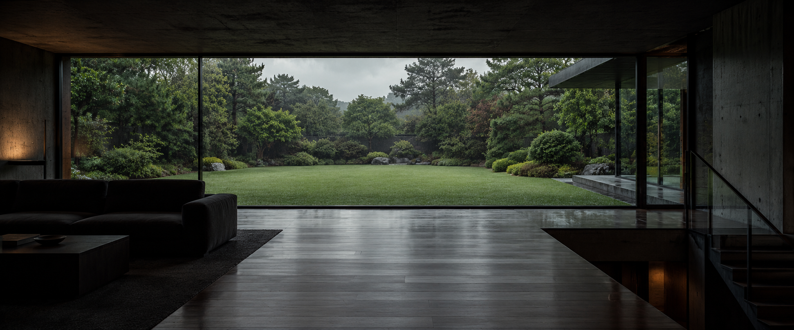
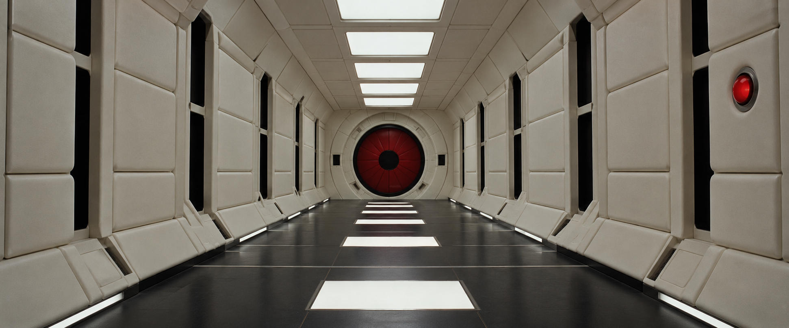

DEX / AI SYSTEMS
The smallest model
that clears the bar. ↗
Classify, dispatch, evaluate. Multi-provider routing with an explicit quality bar for each request class.
Employer work · Written accountSOFTWARE ENGINEER
Rosario, Argentina · UTC−3
01 / PARASITE / BONG JOON-HO
AI products on the surface.
Careful systems underneath.Explore the work ↓

1F / THE VISIBLE PRODUCTMINT MOBILE / BELOW THE INTERFACE
The product page can show cached stock.
Checkout revalidates inside the transaction.
02 / IN THE MOOD FOR LOVE
AI products, built with attention
to the parts people don't see.
A NOTE FROM THE UNGLAMOROUS MIDDLE
The first startup came three and a half years into my career. The work that stayed with me was the part that rarely appears in the demo.
Tomas
Read the personal essay ↗ENGINEERING / AT THE RIGHT SCALE
I build AI products and the systems behind them.
View selected work ↗ILLUSTRATIVE ROUTE / NOT A LIVE EVALUATION
A structured extraction request goes to the smallest model that passes its class's evals. Escalation is available when the smaller model does not clear the bar.
05 / 2001: A SPACE ODYSSEY / STANLEY KUBRICK
AI products. Explicit limits. Room to explore.

BEYOND THE FRAME / FLAGSHIP
The portfolio agent composes interfaces from a constrained catalog. One catalog defines what the model may ask for and what the renderer can draw.
Explore the system ↗SELECTED WORK / 2024–2026
From the interface to the infrastructure.
DEX / AI SYSTEMS
Classify, dispatch, evaluate. Multi-provider routing with an explicit quality bar for each request class.
Employer work · Written accountMINT MOBILE / BACKEND
E-commerce APIs serving 2–3M subscribers. Cached reads, transactional inventory and idempotent checkout.
Employer work · Written accountFLAGSHIP / PERSONAL PROJECT
A portfolio agent that composes project cards, comparisons and timelines with a constrained A2UI catalog.
Personal project · Public sourceFIELD NOTES